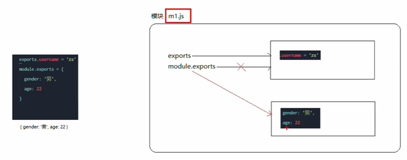
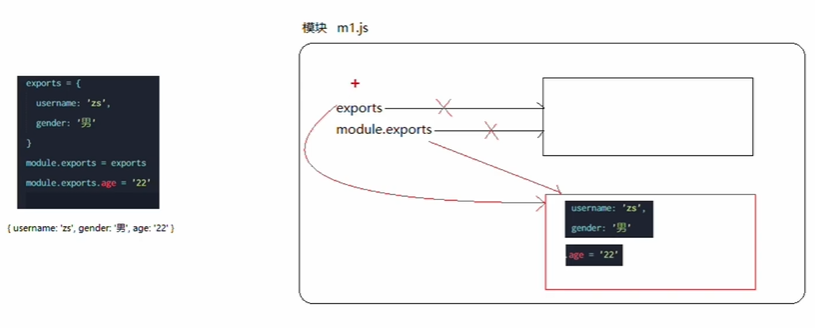

Node.js-模块化
模块化编程：就是遵循固定的规则，把一个大文件拆成读库并相互依赖的多个小模块。
好处：
1.提高代码的复用性
2.提高了代码的可维护性
3.可以实现按需加载
模块化规范：
就是对代码进行模块化的拆分与组合，需要遵循的那些规则
例如：
使用什么样的语法格式来应用模块
在模块中使用什么样的语法格式向外暴露成员。
Node.js中的模块化
分类：
1.内置模块（内置模块是由Node.js官方提供的，例如fs、path、http等）
2.自定义模块(用户创建的每一个.js文件，都是自定义模块)
3.第三方模块（由第三方开发出来的模块，并非官方提供的内置模块，也不是用户创建的自定义模块，使用前需要先下载）
加载模块:
使用强大的require()方法，可以加载需要加载内置模块，用户自定义模块，第三方模块进行使用。例如：
1 | //加载内置的fs模块 |
注意：使用require()方法加载其他模块时，会执行被夹在模块中的代码。
模块作用域
和函数作用域类似，在自定义模块中定义的变量。方法等成员，只能在当前模块内被访问，这种模块级别的访问限制就是模块作用域
向外共享模块作用域的成员
1.module对象
在每个.js自定义模块中都有一个module对象，它里面存储了和当前模块相关的信息，打印如下：
1 | console.log(module); |
2.module.exports对象
在自定义模块中，可以使用module.exports对象，将模块内的成员共享出去，供外界使用。
外界用require()方法导入自定义模块时，得到的就是module.exports所指向的对象
被引入模块：
1 | //在自定义模块中，默认情况下，module.exports = {} |
引入模块：
1 | //在外界使用module导入一个自定义模块的时候，得到的成员 |
输出结果：
1 | PS D:\axios\node.js> node js/9.js |
3.共享成员时的注意点
使用require()方法导入模块时，导入的结果，永远以module.exports指向的对象为准。
被引入模块：
1 | //在自定义模块中，默认情况下，module.exports = {} |
引入模块：
1 | //在外界使用module导入一个自定义模块的时候，得到的成员 |
输出结果：
1 | PS D:\axios\node.js> node js/9.js |
4.exports对象
由于module.exports单词写起来比较复杂，为了简化向外共享成员的代码，Node提供了exports对象。默认情况下，exports和module.exports指向同一个对象。最终共享的结果，还是module.exports指向的对象为准。
被引入模块：
1 | const username = 'admin'; |
引入模块：
1 | //在外界使用module导入一个自定义模块的时候，得到的成员 |
输出结果：
1 | PS D:\axios\node.js> node js/9.js |
5.使用误区


注意：为防止混乱，建议不在同一模块中同时使用exports和module.exports
6.Node,js中的模块化规范
Node.js遵循了CommonJS模块化规范，CommonJS规定了模块的特性和个模块之间如何相互依赖。
CommonJS:
1.模块的输出是一个对象
2.模块的输出对象的属性名称可以是任意的
3.模块的输出对象的属性值可以是任意的